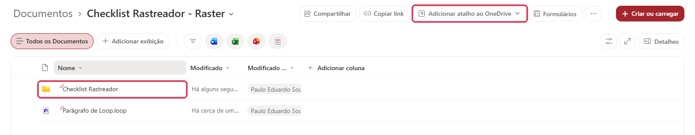
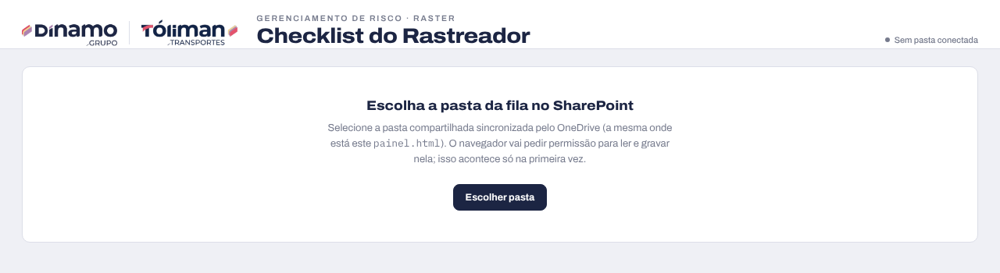
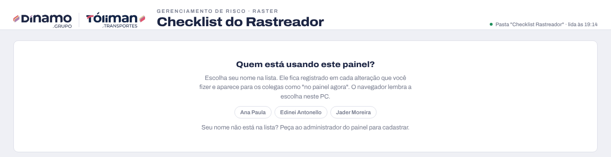
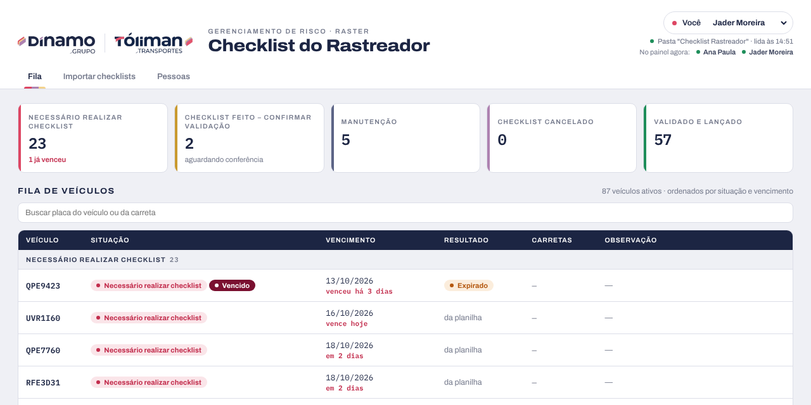
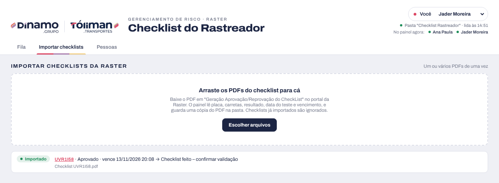
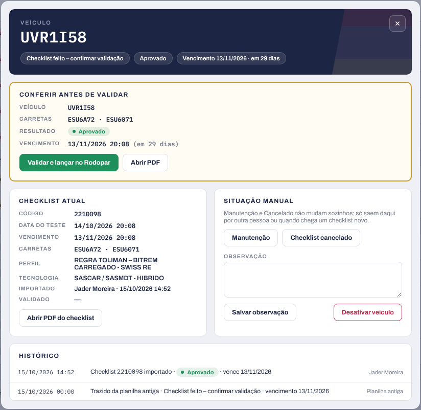
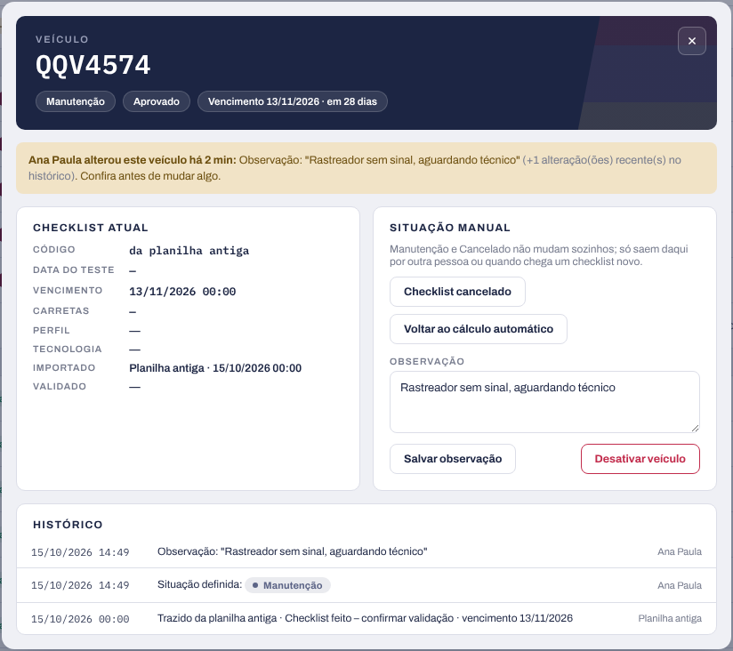

Gerenciamento de risco · Raster
Manual de uso do painel que substitui a planilha "CHECK LIST RASTREADOR RASTER": como sincronizar a pasta no seu computador, importar os checklists e manter a fila em dia.
Conteúdo
Leia as seções 1 e 2 uma vez para deixar o painel funcionando no seu computador. As seções 3 a 7 explicam o dia a dia, e a seção 8 ajuda quando algo não funciona.
Cada pessoa faz isso uma vez. A sincronização faz a pasta do SharePoint aparecer no Explorador de Arquivos e manda suas alterações para os colegas automaticamente.
Olhe os ícones perto do relógio do Windows. Se não houver nenhuma nuvem, ou se ela estiver cinza, abra o OneDrive pelo menu Iniciar e entre com seu e-mail da empresa.

Checklist Rastreador e escolha Sempre manter neste dispositivo. Assim os arquivos ficam no computador e o painel não espera downloads.Clique com o botão direito em painel.html e escolha Enviar para › Área de trabalho (criar atalho). No Windows 11, essa opção fica em Mostrar mais opções. Nos próximos dias, é só abrir o painel pelo atalho.
eventos/, presenca/ e checklists/. Quem cuida delas é o painel: cada arquivo em eventos/ é uma alteração feita por alguém, e apagar um deles desfaz essa alteração para todos.O painel funciona no Microsoft Edge ou no Google Chrome. Firefox e Safari não conseguem gravar na pasta.
painel.html pelo atalho ou pela pasta sincronizada. Se abrir em outro navegador, clique com o botão direito no arquivo, escolha Abrir com e selecione Edge ou Chrome.Checklist Rastreador sincronizada, a mesma onde está o painel.html.

O navegador lembra a pasta e o nome. Em algumas aberturas ele mostra Permitir acesso à pasta: é só clicar para confirmar. Para trocar de usuário no mesmo computador, use a caixa Você, no canto de cima. Para apontar o painel para outra pasta, por exemplo depois que a pasta mudou de lugar, clique em trocar pasta, ao lado do nome da pasta.
Cada veículo fica numa de cinco situações, mostradas nesta ordem de cima para baixo. Dentro de cada situação, o vencimento mais próximo vem primeiro.

| Situação | O veículo está aqui quando | O que fazer |
|---|---|---|
| Necessário realizar checklist | Faltam 15 dias ou menos para vencer, já venceu (etiqueta Vencido) ou o último PDF foi reprovado | Fazer o checklist na Raster e importar o PDF |
| Checklist feito – confirmar validação | Chegou um PDF aprovado que ninguém conferiu | Validar e lançar (seção 5) |
| Manutenção | Uma pessoa marcou | Voltar ao cálculo automático quando o veículo sair da oficina |
| Checklist cancelado | Uma pessoa marcou | Voltar ao cálculo automático quando fizer sentido |
| Validado e lançado | O checklist foi conferido e faltam mais de 15 dias para vencer | Nada. Ele volta sozinho para o topo a 15 dias do vencimento |
Importar o PDF é o que coloca um checklist novo na fila. Não há nada para digitar.

| Aparece | O que aconteceu |
|---|---|
| Importado · Aprovado | O veículo vai para "Checklist feito – confirmar validação". Falta validar (seção 5) |
| Importado · Reprovado | O veículo vai para "Necessário realizar checklist" |
| Já importado | Esse checklist já estava na fila. O aviso diz quem importou e quando. Nada muda |
| Erro | O arquivo não é um checklist da Raster ou está incompleto. Baixe o PDF de novo |
O painel lê do PDF a placa do veículo, as carretas, o resultado, a data do teste, o vencimento, o perfil de segurança e o código do checklist. Uma cópia do PDF fica em checklists/<placa>/, e qualquer pessoa abre pelo botão Abrir PDF no detalhe do veículo.
Um veículo novo na frota entra na fila sozinho quando o primeiro checklist dele é importado. Trocar de carreta não exige checklist novo: ele vale para o veículo até o vencimento.
Validar é a conferência humana de um checklist aprovado. É o que leva o veículo para o fim da fila, em "Validado e lançado".

O painel registra seu nome e o horário. A validação vale para aquele checklist: quando chegar um checklist novo do mesmo veículo, ele precisa ser validado de novo.
Tudo isso fica no detalhe do veículo: clique em qualquer linha da fila para abrir. Os botões ficam no quadro Situação manual, à direita (veja o print da seção 5).
| Para | Faça | O que acontece |
|---|---|---|
| Veículo foi para a oficina | Manutenção | Fica em Manutenção até alguém mudar ou chegar um checklist novo |
| Checklist foi cancelado | Checklist cancelado | Mesma regra da Manutenção |
| Desfazer Manutenção ou Cancelado | Voltar ao cálculo automático | O painel recalcula a situação pelo checklist e pelo vencimento |
| Anotar algo sobre o veículo | Escreva em Observação › Salvar observação | O texto aparece na fila e fica no histórico |
| Veículo saiu da frota | Desativar veículo e clique de novo para confirmar | Sai da fila e dos contadores. Continua no botão Desativados |
| Veículo voltou | Em Desativados, abra o veículo › Reativar veículo | Volta para a fila com o histórico inteiro |
Nada é apagado de verdade. O Histórico, no fim do detalhe, mostra cada alteração do veículo com data, hora e quem fez.
Várias pessoas podem usar o painel ao mesmo tempo. Cada alteração é salva na hora, num arquivo próprio, então ninguém apaga o trabalho do outro. Não existe botão Salvar.
No painel agora, no canto de cima, mostra quem deu sinal nos últimos 3 minutos. Quem acabou de fechar o painel ainda aparece por 2 ou 3 minutos.
Ao lado do nome da pasta aparece o horário em que o painel leu a pasta pela última vez. Ele relê a cada 20 segundos e sempre que você volta para a janela dele.
Alguém novo precisa usar o painel: peça a um proprietário do time no Teams para adicionar a pessoa como membro. Depois ela segue as seções 1 e 2 no computador dela.
A aba Pessoas mostra quem usa o painel. Dá para adicionar e remover nomes; a remoção pede um segundo clique para confirmar.

| Problema | Como resolver |
|---|---|
| Aparece "Abra este painel no Microsoft Edge ou no Google Chrome" | O arquivo abriu em outro navegador. Botão direito em painel.html › Abrir com › Edge ou Chrome |
| Aparece "Reconectar à pasta" | Clique em Permitir acesso à pasta. É o navegador pedindo confirmação; nada se perdeu |
| A fila abriu vazia, mas os colegas veem veículos | O painel está apontando para outra pasta. Clique em trocar pasta e selecione a pasta sincronizada do time |
| Aparece "Falha ao ler a pasta" no canto de cima | A pasta mudou de lugar ou deixou de ser sincronizada. Sincronize a pasta do time de novo (seção 1) e use trocar pasta |
| A alteração de um colega não aparece | Confira se a nuvem do OneDrive está azul, sem aviso, no seu computador e no dele. Espere um ou dois minutos |
| Aparece "Não foi possível salvar na pasta" | Você não é membro do time, ou o OneDrive está pausado. Peça a um proprietário do time para adicionar você |
| "Abrir PDF" diz que não encontrou o arquivo | O PDF ainda está sincronizando. Tente de novo em instantes |
Apareceu um arquivo com nome de computador, como 2210098-PC01.pdf | Duas pessoas importaram o mesmo PDF ao mesmo tempo e o OneDrive criou uma cópia. Pode apagar a cópia; o checklist conta uma vez só |
| Escolhi o nome errado | Troque na caixa Você, no canto de cima. O que já foi feito continua com o nome anterior |